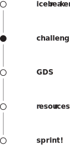

Challenge
sprinters
Procrastination is worse for you than you think. Procrastination results in worse grades and more stress. Procrastination makes your memory work harder. Procrastination actually takes more time.
Can it be mitigated? Can we develop a platform, utility, service, network, or otherwise that can successfully mitigate procrastination to improve student performance and experience?
back to agenda
back to icebreaker
next to GDS 
